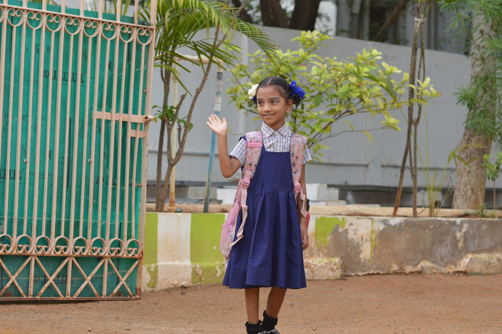
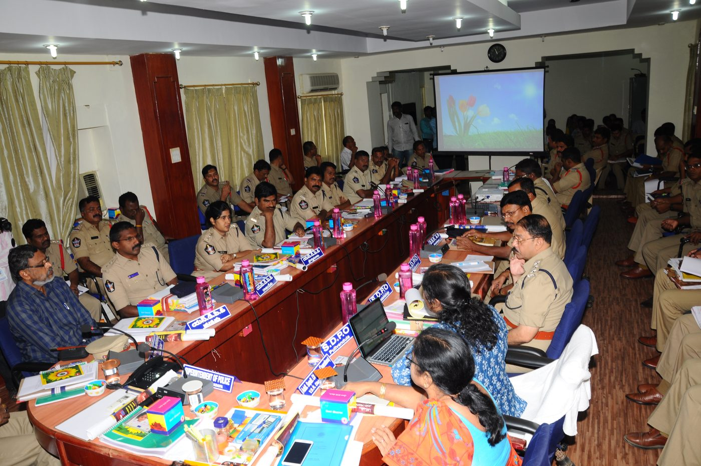
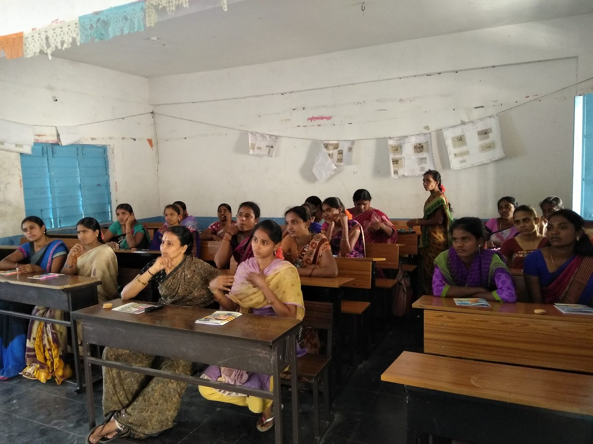

Changing how a society sees its girls.
Discrimination is a learned way of life, passed down through generations. For over 30 years we’ve worked to unlearn it — and we’ve made real progress.
Support Our Advocacy
Progress you can measure
rights education
abortions stopped
intervened in
girl-child ratio
Awareness is the key driver of change
“Anna ki attu, naaku thittu…” A Telugu folk song — a girl sings of going hungry while the boy is given the best of the food.
Around Kadapa, many families have only ever seen daughters as a burden — households left in debt after dowries, girls humiliated after marriage, women unaware of the laws meant to protect them. Information is power, and its absence keeps women dependent and helpless.
So we focus on community outreach and education — because the future lies in the value system of the next generation.

How the work unfolded
Two decades of advocacy in Kadapa, from a single pair of feet on a doorstep to a district-wide network of women who now do this work themselves.
One woman at a time
Long before there was a project name or a grant to fund it, Sandhya started knocking on doors. She and a small team worked their way through two mandals — Chennur and Chinta Komma Dinne — sitting in one front room after another with pregnant women and their families.
The conversations were plain and specific. What a daughter is worth. Why not to book a scan to find out the sex of the child, and why not to end a pregnancy on hearing the answer — and that both determining foetal sex and sex-selective abortion are punishable offences under the PCPNDT Act, for the doctor as much as for the family. That domestic violence is a crime. That every girl should be enrolled in school, and that child marriage is against the law.
It was slow work, one household at a time. But in the two mandals where the campaign ran, the child sex ratio held where the district’s did not.
- Chennur — 1001 girls : 1000 boys
- C.K. Dinne — 998 : 1000
The census that named the problem
Then the 2011 Census was published. Across Kadapa district there were 918 girls for every 1,000 boys — thousands of girls who should have been there and were not.
The number confirmed, at scale, what the door-to-door visits had been finding one house at a time. This was not a scattering of individual tragedies. It was a district-wide pattern, and it needed a response of the same size.
Mana Bidda — “Our Child”
Mana Bidda was a three-year, EU-funded answer to that number. It intervened in cases as they arose — pregnancies at risk, marriages being arranged for children — but the real target sat further upstream: the thinking of the people a village actually listens to.
Baseline assessments, village meetings, sensitisation sessions, leadership training, volunteer recruitment, advocacy and psychosocial support all ran alongside one another. The sessions that did the most work were held in schools with boys, on the theme of role reversal, and were led by Aarti’s own girls. For most of those boys it was the first time anyone had asked them to picture it from the other side.
By the end of the project, Kadapa’s girl-child ratio had risen from 918 to 936 girls per 1,000 boys.
- 1,215 village meetings
- 105,000 participants
- 119 abortions stopped
- Unregistered pregnancies: 551 → 8
- 51 counsellors trained
Abhaya — “Fearless”
Mana Bidda ended, and the question became what would hold once the funding stopped. The women who had stood up in their own villages — the ones who reported a scan, or stopped a wedding — were now known for it, and exposed because of it.
Abhaya was built to protect them. It brought those women together into coalitions and networks, and put a real support system behind them: physical, psychological, social and legal. It also gave the work somewhere permanent to live, in the Open Resource Centres that any woman can still walk into today — and produced an Android app of the same name, so that knowing your rights no longer depends on someone coming to your door to explain them.
Read the full Abhaya story →
Open Resource Centres
Help, whenever it’s needed
We’ve created seven Open Resource Centres — with a larger centre being built in Kadapa — where any woman can come for social, legal, and emotional help, regardless of caste, creed, age, or status.
Alongside counselling and a safe house, the centres train women in livelihood skills and leadership, so they can change their own circumstances.
Read about our ORCs (bilingual PDF) →Revati’s story
Revati came to Aarti Home in 2002 as a trainee in our tailoring program. Today she is a counsellor and a change-maker in Bayanapalli, a small village in Kadapa district.
She leads conversations on women working and girls being educated, and campaigns against dowry — a personal crusade that is reshaping her whole community.
Stand up for girls
Your support helps us reach more communities, train more advocates, and change more minds.
Support Our Advocacy ↗